Mau-Mau Flip · drei Entwurfsrichtungen im Vergleich
Stand 04.10.2026. Die drei Entwürfe sind unverändert. Kartenbogen und Streifentest habe ich als Prüfer aus den Karten-SVGs der Richtungen gerendert, jeweils mit den Schriften der Richtung (_pruefung/, neu erzeugen mit _pruefung/pruefbilder.sh). Begründungen und Verbesserungen stehen in VERGLEICH.md, die ausführliche Farbsehschwäche-Ansicht in farbsehschwaeche.html. Die Wahl trifft der Nutzer.
| Kriterium (Note 1 = sehr gut … 5 = mangelhaft) | A | B | C | Kurz begründet |
|---|---|---|---|---|
| Eckindex im Fächer (22 dp, obere Hälfte) | 1 | 2 | 1 | A und C groß und eindeutig. Bei B ist die Schrift kleiner, das „+“ winzig, und die Joker-Banner wirken unruhig. |
| Farbsehschwäche (Protan, Deutan, Tritan) | 1 | 2 | 3 | A: Auch die Neontöne folgen der Helligkeitsstaffel. B: Die Banner tragen die Staffel. C: Der Index der dunklen Seite nutzt fast gleich helle Töne, Pink und Türkis fallen bei Protan zusammen. |
| Abstand zum Vorbild | 1 | 1 | 2 | Alle drei ohne Oval, Schräge, Schlagschatten und fremden Namen. C wirkt im Ganzen am vertrautesten (volle Farbfläche mit weißer Ziffer), der helle Joker mit vier Farbvierteln liegt am nächsten. |
| Katze und Logo: erwachsen, aber süß | 3 | 2 | 3 | A sauber, aber Comic mit großem Kopf. B erwachsen und schaut wirklich nach oben, der Arm wirkt aber wie eine Röhre. C ist eine klare Marke, die Katze aber plump, mit Schulterbeule und kaum Blick nach oben. |
| App-Symbol bei 48 px | 2 | 4 | 2 | A und C bleiben als Katzengesicht vor Tag und Nacht erkennbar. B ist dunkel, der eingebaute Goldrahmen kostet Fläche und kollidiert mit Androids Symbolmasken. |
| Animation (Ebenen) und Godot-Import | 3 | 3 | 1 | Alle haben die sechs Ebenen, alle setzen die Werte als Text. A braucht viel Korn, Glühen und Mischmodi, B viele feine Goldlinien und Glühen. C ist flach und am leichtesten nachzubauen. |
| Kartenfarbe auf einen Blick | 1 | 3 | 1 | Bei B ist die helle Seite überwiegend elfenbeinfarben mit Pastell. Die Farbe steckt im Banner und im Wert, auf dem Ablagestapel ist sie schwächer. |
| Kartenwirkung hochwertig und erwachsen | 2 | 1 | 3 | B als Art-déco-Tarot am edelsten und am nächsten an der Referenz. A eigenständiger Siebdruck mit Neon. C ist sauber, wirkt aber wie ein übliches Familienkartenspiel. |
| Durchschnitt (ungewichtet) | 1,8 | 2,3 | 2,0 | Empfehlung: Karten auf Basis von A, Logo-Katze nach B, App-Symbol nach dem Aufbau von A und C (siehe unten). |
Logo
logo.png der Richtungen, 1600 × 900
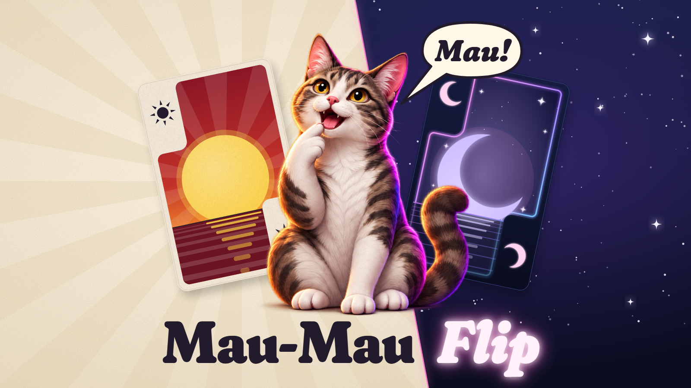
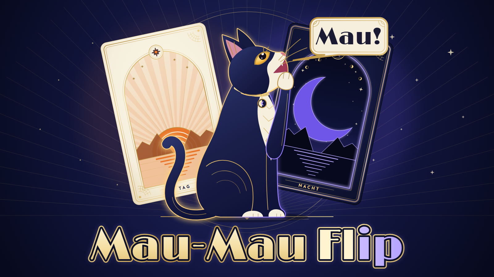
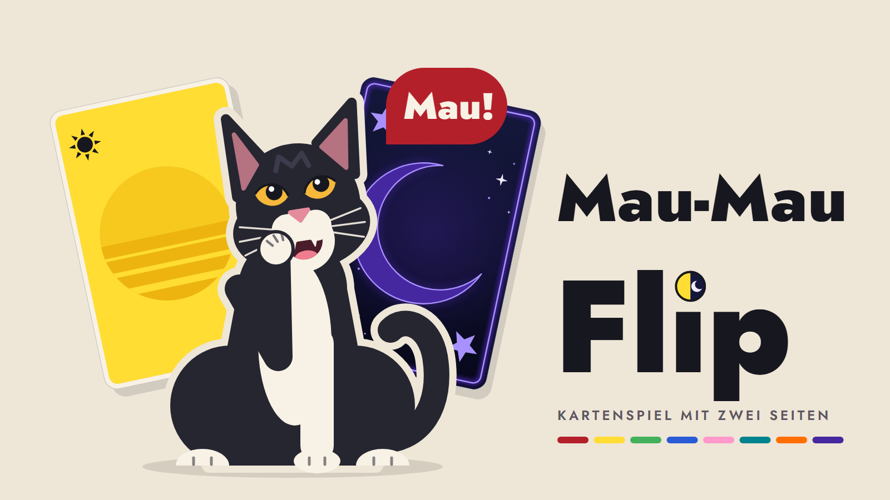
Handansicht im Querformat
hand.png der Richtungen, 1600 × 720 (Dichte 2, also 800 × 360 dp). Die Streifenbreite haben die Designer selbst gewählt: A 36 dp, B etwa 22 dp, C 22 bis 52 dp.
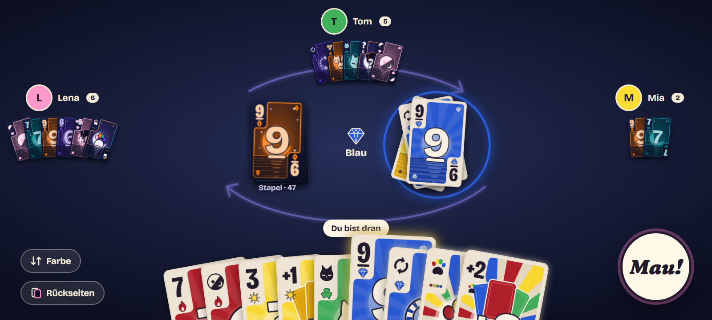
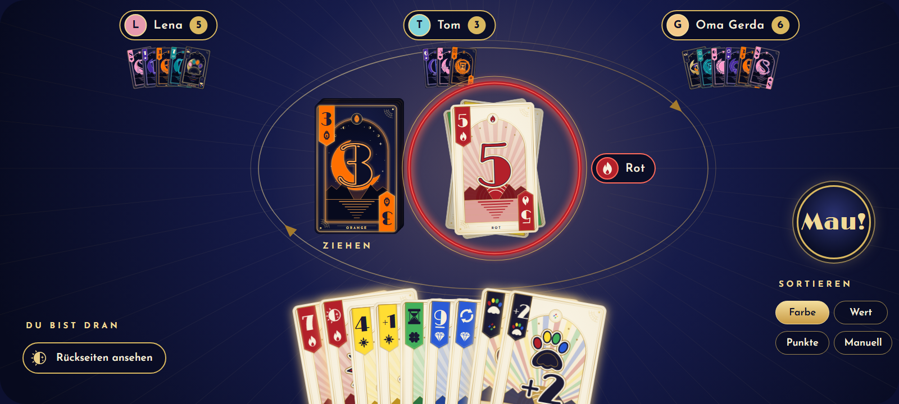
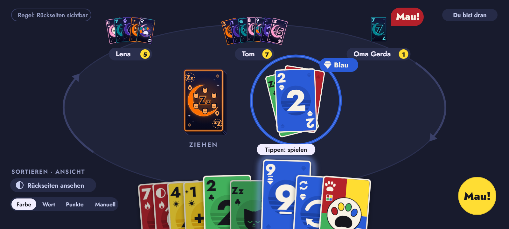
Kartenbogen
Die 16 geforderten Karten, je Paar die helle über der dunklen Seite. Aus den Karten-SVGs gerendert.
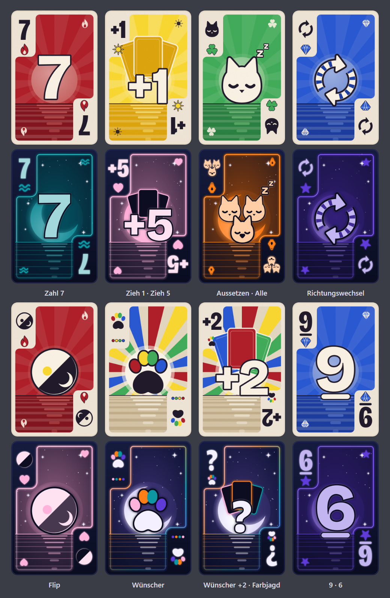
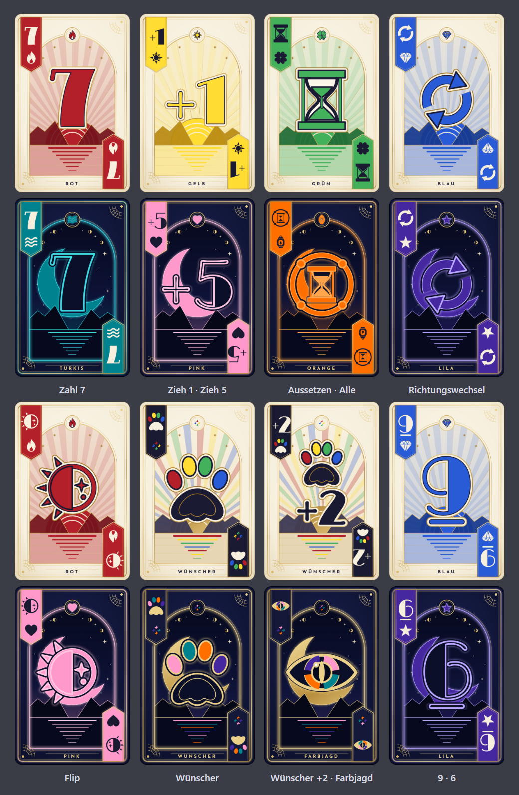
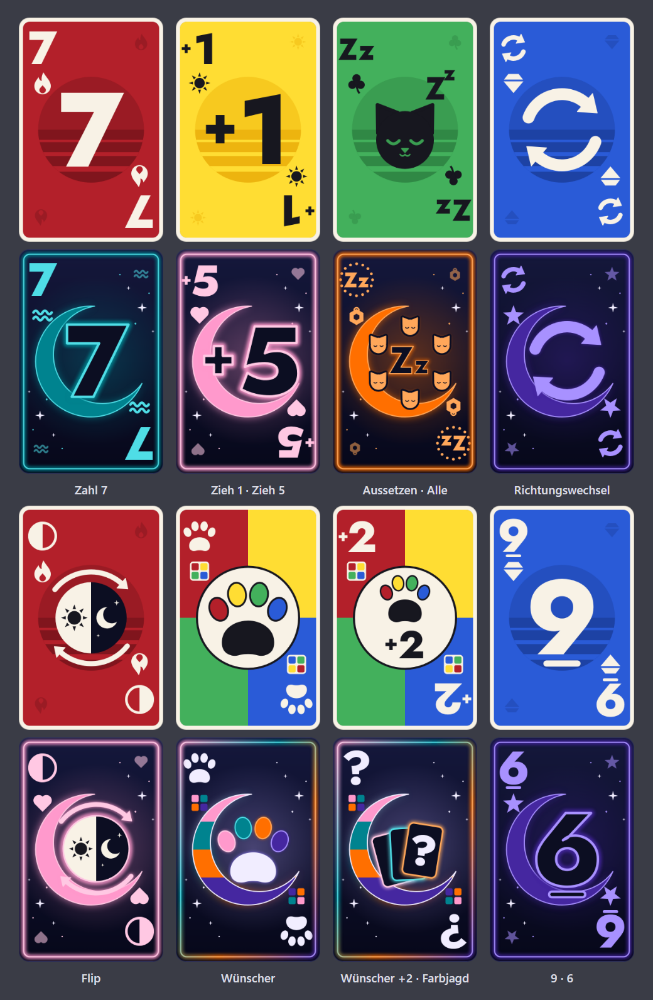
Streifentest bei gleichen Bedingungen
Karte 80 dp breit (160 px bei Dichte 2). Von jeder Karte bleiben 22 dp sichtbar, und man sieht nur die obere Hälfte. Links die helle Hand, rechts die dunkle, nach Farbe sortiert. Gezeigt in Originalgröße.
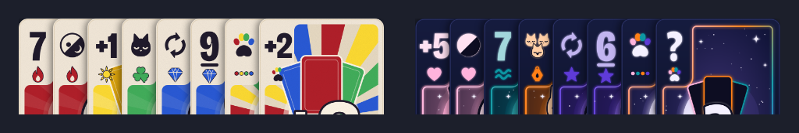
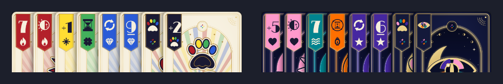
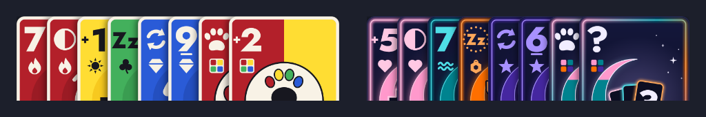
App-Symbol
icon.png der Richtungen, im Browser verkleinert auf 192, 96 und 48 px
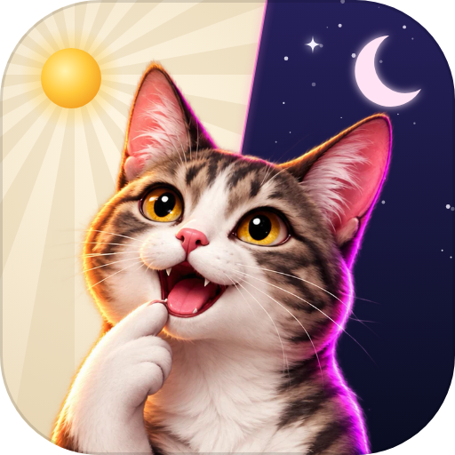
512 (verkleinert)Das Katzengesicht füllt die Fläche, Sonne und Mond bleiben erkennbar.
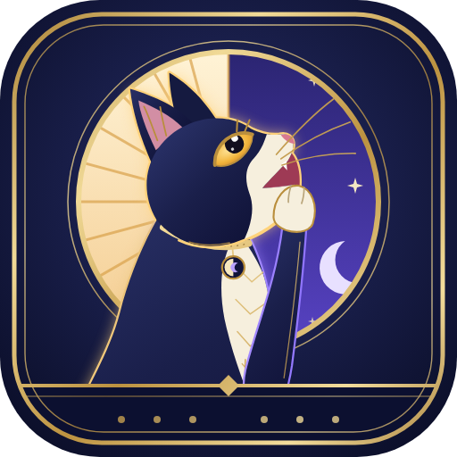
512 (verkleinert)Bei 48 px ist es dunkel und kleinteilig. Der Goldrahmen würde von Androids Symbolmaske beschnitten.
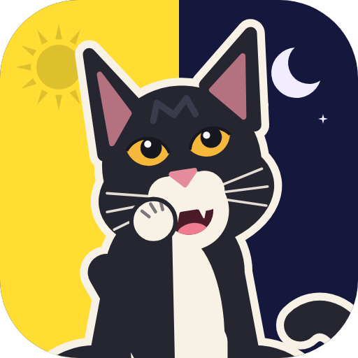
512 (verkleinert)Gelb und Nachtblau als Hälften: das stärkste Signal bei kleiner Größe. Das Gesicht wird allerdings klein.
Farbsehschwäche
Streifentest unter Simulation nach Machado 2009 (Schweregrad 1). Hand und Zahlen dazu: farbsehschwaeche.html (gerendert als farbsehschwaeche.png).

Helle Seite: Alle drei nutzen dieselbe Startpalette. Am knappsten sind Grün und Blau bei Tritanopie (0,152), dort trennen Kleeblatt und Kristall. Dunkle Seite: Bei A bleiben die vier Farben getrennt. Bei B tragen die gefüllten Banner die Farbe. Bei C sehen Wert und Symbol von Pink und Türkis im Index bei Protanopie gleich aus (OKLab-Abstand 0,005).
Empfehlung (die Wahl trifft der Nutzer)
Vorschlag: Karten von A, Katze von B, App-Symbol nach A und C.
- Karten: A als Grundlage, also Papierlasche, Sonne bzw. Mond über gestreiftem Meer und Neontöne in der Helligkeitsstaffel. Funktional ist das der stärkste Entwurf, und die Silhouette mit der Lasche gehört nur diesem Spiel. Erwachsener wird A mit zwei Anleihen bei B: einer feinen Goldlinie im Rand und ruhigeren Aktionsmotiven. Von C kommen die kräftigeren Ziffern im Index und die flache Bauweise für Godot.
- Logo: die Katze aus B (Smokingkatze mit Blick nach oben und Sonne-Mond-Medaillon), aber in Dreiviertelansicht wie in der Referenz und mit angewinkeltem Arm. Dazu die Bildteilung und der Schriftzug von A: „Mau-Mau“ auf Papier, „Flip“ als Neon in der Nacht.
- App-Symbol: nur der Kopf mit Pfote vor einem hälftig geteilten Tag-und-Nacht-Grund wie bei C, ohne eingebauten Rahmen und als adaptive Ebenen.
- Alternative: Wer den edlen Gesamteindruck über alles stellt, nimmt B. Dann braucht B mehr Farbe auf der hellen Seite, breitere Banner mit größerer Schrift und ein neues App-Symbol.